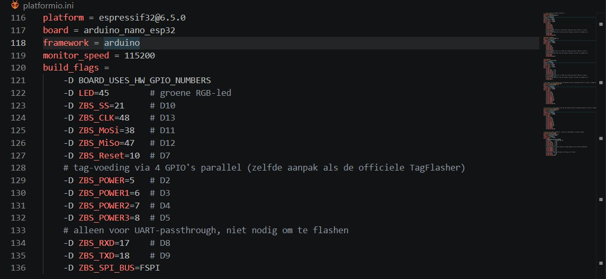
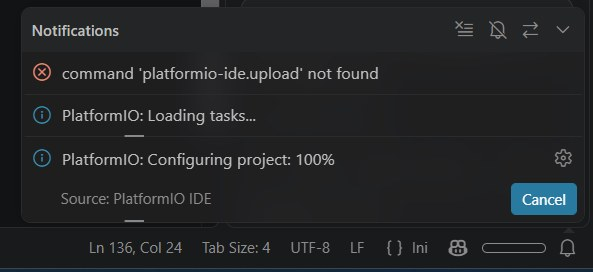
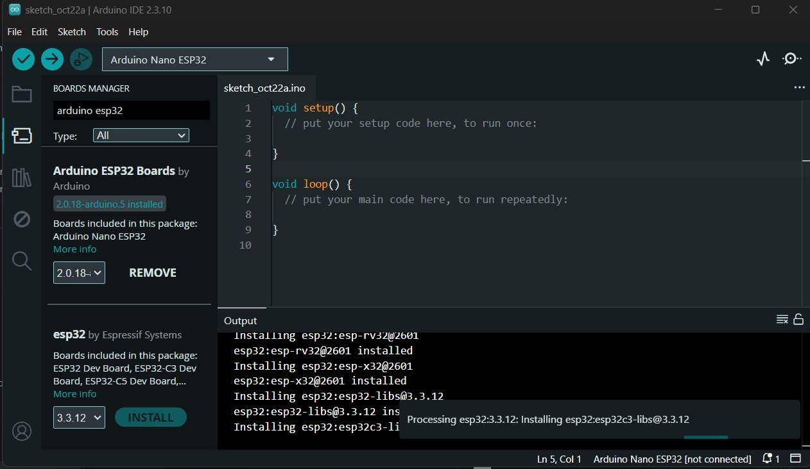

11. E-paper prijskaartje flashen (eigen onderzoek)
Ik wilde uitzoeken hoe je een e-paper prijskaartje met eigen firmware kunt flashen.
do 22 oktober 2026
Dit hoort niet bij het project
Dit onderzoek hoort niet bij Bio-Reachy. Ik zet het hier omdat het laat zien hoe ik iets nieuws uitzoek.
Waarom
Ik had eerder een video gezien waarin iemand in de Jumbo een e-paper prijskaartje flasht met een Flipper Zero. Dat vond ik cool, dus ik wilde zelf uitzoeken hoe dat werkt.
Wat ik deed
Ik begon met informatie over het kaartje zoeken in de FCC-database. De chipset is een SLT-EM007 van SoluM/Samsung, met een ZBS243-chip. Daarna zocht ik uit hoe je zo'n kaartje flasht. Dat kan alleen via een extern apparaat zoals een Arduino of een ESP32, want het kaartje zelf heeft geen USB. Het project OpenEPaperLink en de ZBS_Flasher van atc1441 ondersteunen dit type kaartje.
Ik heb een Arduino Nano ESP32 die op 3,3 V werkt. Voor dat bord bestaat geen kant-en-klare ZBS_Flasher-build. Daarom installeerde ik PlatformIO om de code te kunnen draaien, en paste ik in platformio.ini de pinnen en instellingen aan op mijn Nano.

Voordat je flasht, maak je eerst een backup van de originele firmware en het MAC-adres van het kaartje, zodat je die niet kwijtraakt. Een segmented kaartje toont alleen cijfers en vaste symbolen en geen plaatjes, dus veel kun je er niet mee tonen. Voor het flashen moet ik het kaartje met draadjes aan de testpads solderen. Ik heb eerder gesoldeerd, dus dat kan ik een beetje.
Probleem. De code compileerde wel, maar het uploaden gaf de fout No DFU capable USB device. PlatformIO gaf ook de melding command 'platformio-ide.upload' not found.
Oplossing. Mijn computer miste de driver voor de Nano ESP32. Ik installeerde Arduino IDE 2 en daarin het pakket Arduino ESP32 Boards (van Arduino). Daarna werkte het uploaden.


Hoe ver ik kwam
Het uploaden naar de Nano lukte. Het solderen en het flashen van het kaartje zelf heb ik nog niet gedaan, omdat we een les hadden en het kaartje niet mee naar huis mochten. Ik weet wel wat ik daarna moet doen.
Wat ik hieruit leer
Een bord heeft de juiste driver nodig voordat je erop kunt uploaden. Ook leerde ik dat je eerst een backup maakt voordat je iets overschrijft. Verder hielp het dat er al een project en een flasher bestonden, zodat ik niet alles zelf hoefde uit te zoeken.
Bronnen
- FCC-database, apparaatinformatie. https://apps.fcc.gov/oetcf/eas/reports/GenericSearchResult.cfm
- OpenEPaperLink wiki, Segmented Tag SLT-EM007 UK.
- atc1441, ZBS_Flasher (GitHub). https://github.com/atc1441/ZBS_Flasher
- mysku.club, blogpost over dit kaartje. https://mysku.club/blog/diy/97251.html
- YouTube-video over het flashen van een prijskaartje met een Flipper Zero. https://www.youtube.com/watch?v=BvOkOANCmMk